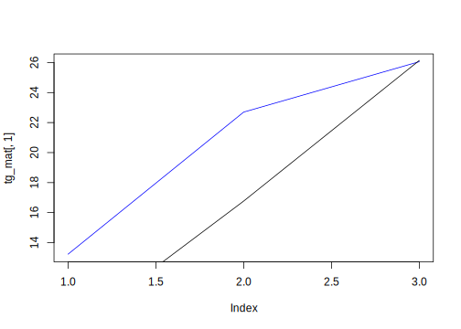
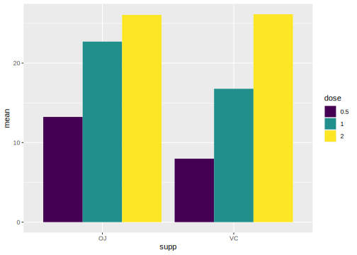
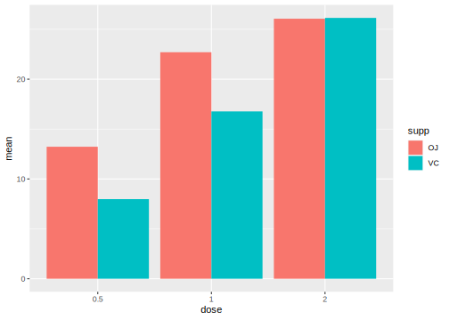

5.4 ggplot2
Prerequisites: tidyverse 패키지 또는 ggplot2 패키지 읽어오기:
require(tidyverse) 또는 require(ggplot2) 실행
- 데이터에 대한 그래프는 데이터의 속성(수치형, 범주형)과 시각적 속성(점, x-y 좌표 위치, 선, 색상, 막대의 높이) 간에 대응 또는 매핑(mapping) 으로 이루어짐
- R 에서 가장 유명한 데이터 시각화 패키지 중 하나로 2005년 Hadley Wickham이 개발 및 배포
- Leland Wilkinson 의 grammar of graphics (Wilkinson 2012) 를 구현
Grammar of graphics: 그래프를 구현하기 위한 일관적인 체계로 그래프를 데이터, 스케일, 레이어, 좌표 등과 같은 의미론적 요소(sementic components) 로 나눔
- ggplot의 grammar of graphics

Figure 5.20: ggplot의 grammar of graphics 주요 구성 요소
- R 기본 graphics 패키지의 경우 데이터 속성을 시각적 속성으로 매핑 시 매 경우가 고유한 작업이고, 매핑이 변경될 경우 데이터를 재구성하거나 완전히 다른 plotting 함수를 적용해야 함.
- R base graphics와 ggplot의 비교
# R 기본 데이터셋: ToothGrowth
ToothGrowth %>%
group_by(supp, dose) %>%
summarise(mean = mean(len)) %>%
mutate(dose = factor(dose,
ordered = TRUE))-> tg_long`summarise()` regrouping output by 'supp' (override with `.groups` argument)tg_long %>%
spread(supp, mean) %>%
column_to_rownames("dose") %>% # 열 값을 열이름으로 변환(in tibble 패키지)
as.matrix -> tg_mat
# R graphics: barplot() 사용
barplot(tg_mat, beside = TRUE)
Figure 5.21: R 기본 barplot() 생성 그래프
dose별 OJ와 VC 막대도표:dose로 그룹화를 하기 위해 데이터 구조 변경(전치) 필요

Figure 5.22: R 기본 barplot() 생성 그래프: 데이터 전치
- 막대 대신 선(line)으로 표현

Figure 5.23: R 기본 선 그래프: plot(), lines() 함수 사용
plot()함수 호출 시 y 축 범위가 첫 번째 선에 대해서만 설정- x 축이 범주 대신 번호가 사용
- ggplot 사용: 데이터 프레임에만 적용 가능(데이터 구조는 long-format)
# require(ggplot2)
ggplot(data = tg_long,
aes(y = mean)) -> gmap # 기본 mapping 유지를 위해
# ggplot 클래스 객체 저장
gmap +
geom_bar(aes(x = supp, fill = dose),
stat = "identity", # 데이터 고유값을 막대 높이로 사용
position = "dodge") # 막대 위치 조정(beside 조건과 유사)

Figure 5.24: ggplot()과 geom_bar()을 이용한 막대 도표
- 데이터 구조를 변경하지 않고 ggplot의 매핑 변수 변경

Figure 5.25: x와 fill의 mapping 변경
- ggplot을 이용한 선 도표 생성

Figure 5.26: geom_line()을 이용한 선 그래프 생성
- 기본 그래프 함수를 이용해 막대도표 대신 선 도표 생성 시 완전히 다른 명령 사용
- 선 그래프 생성 시 기본 그래프는 하나씩 도표를 추가한 반면, geom_line()의 경우 모든 선이 한번에 그려짐
5.4.2 geom_point()
5.4.3 geom_line()
5.4.4 geom_bar()
5.4.5 geom_errorbar()
5.4.6 geom_histogram()
5.4.7 geom_boxplot()
5.4.8 geom_density()
5.4.9 geom_smooth()
5.4.10 theme()
References
Wilkinson, Leland. 2012. “The Grammar of Graphics.” In Handbook of Computational Statistics, 375–414. Springer.